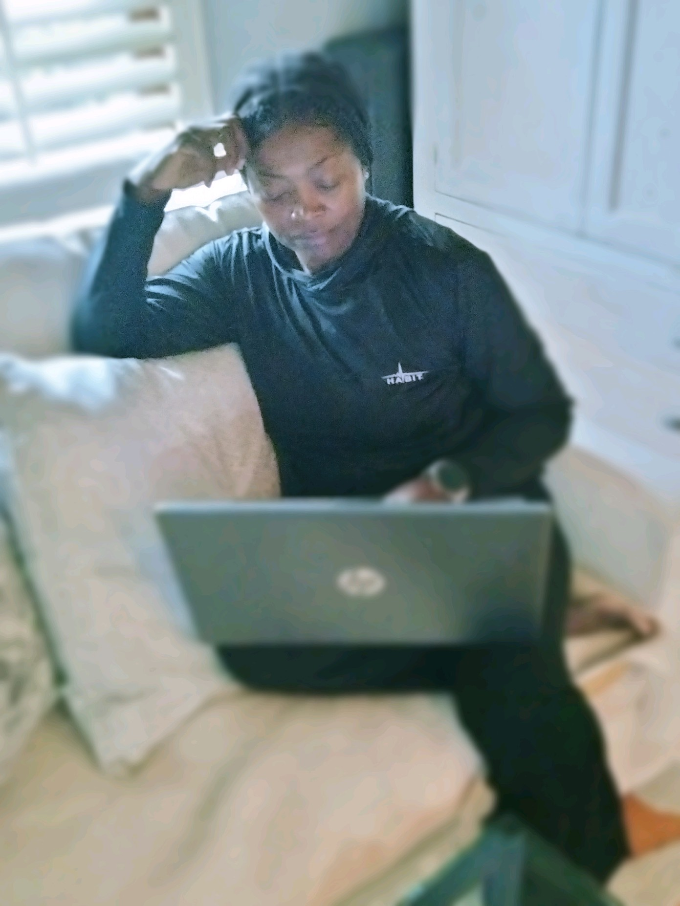
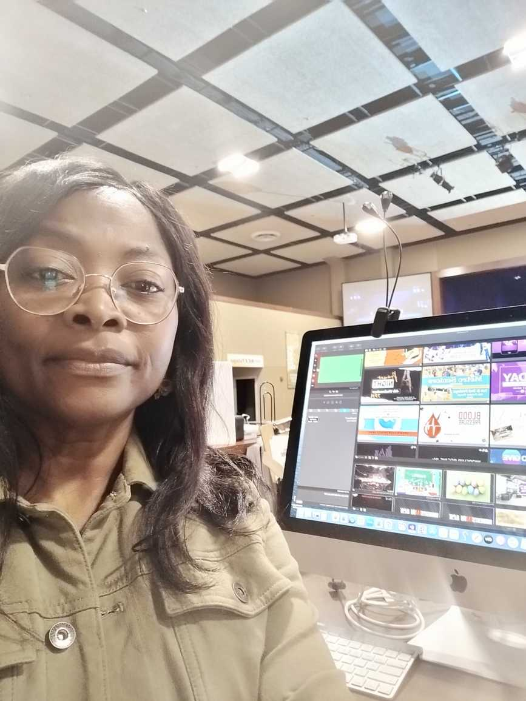

About Me
Hi, I'm Suntha Lucas, a passionate Software Engineer with a strong foundation in math and science. I have a deep love for problem-solving and enjoy figuring things out, whether it’s through programming, reading, or tinkering with things to see how I can make them work better. I find joy in watching the Discovery Channel, where I can continuously learn about the world and expand my knowledge.
After 38 years with the United States Postal Service (USPS), where I spent 20 of those years as a Manager and Postmaster, I’m transitioning into my second career as a Software Engineer. I am excited to bring my leadership, organizational, and problem-solving skills into the tech world. My experience in managing operations, handling challenges, and leading teams has shaped me into someone who thrives in dynamic environments.
I am determined and loyal to my craft, always pushing myself to be the best at whatever I do. Whether it’s creating efficient code, learning new technologies, or collaborating with others, I’m committed to continuous growth and improvement. Outside of work, I love to travel, exercise, and enjoy all types of sports. I believe in keeping a healthy balance between work and life, which helps me stay motivated and energized for new challenges.
I look forward to applying my skills and experience to help create innovative solutions in the world of software development.

Resume

SUNTHA LUCAS
Tulsa, OK | (918) 850-7091 | laurese51@gmail.com | linkedin.com/in/Suntha-lucas
Objective
Highly motivated and detail-oriented Software Engineer and Full Stack Developer. Eager to contribute to the development, quality assurance, and maintenance of cutting-edge communication and navigation products. Diploma in Full Stack Web Development with a strong foundation in C++, Java, and Python. Committed to applying technical skills and transferable experience in a collaborative team environment.
Skills
Programming Languages: C, C++, C#, Java, Python, JavaScript
Web Development: HTML, CSS, Front-End, Back-End
Databases: SQL, NoSQL
Technical Skills: Object-Oriented Programming (OOP), Docker, DevTools
AV Technologies: Soundboard Operation, Camera Control, Lighting Systems, Video Editing
Core Competencies: Analytical Skills, Problem-Solving, Critical Thinking, Communication, Teamwork, Leadership, Time Management, Attention to Detail
Education
Atlas School, Tulsa, OK
Diploma – Full Stack Web Developer | Expected Graduation: August 2025
Experience
United States Postal Service, Tulsa, OK
Postmaster & Manager of Customer Service, Customer Success
January 1986 – August 2023
Leadership and Teamwork: Leading teams, delegating tasks, and collaborating effectively.
Problem-Solving: Handling customer complaints, resolving conflicts, and finding solutions to operational challenges.
Communication: Clearly communicating with customers, employees, and stakeholders.
Organization and Time Management: Managing daily operations, prioritizing tasks, and meeting deadlines.
Attention to Detail: Ensuring accuracy in postal operations and financial transactions.
Met Church, Tulsa, OK
AV Tech Director
February 2020 – Present
Collaborate with a team to manage live streaming services, utilizing technical skills in soundboard operation, camera control, and lighting systems, reaching a viewership of thousands of members and non-member of the church.
Direct and coordinate audio-visual setups for live events, enhancing production quality and audience engagement.
Troubleshoot technical issues in real-time, contributing to a seamless service experience and further developing strong problem-solving and critical-thinking abilities.
Gained hands-on experience with video editing software, contributing to the overall production value.
Additional Information
Willing to relocate for the right opportunity.
Fluent in English; [add any other languages spoken].